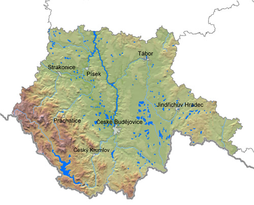

Kraj spadá do povodí Labe a úmoří Severního moře
Vodní toky: Vltava, Stropnice, Lužnice, Černá, Teplá, Lomnice, Skalnice, Otava, Blanice
Vodní nádrže: Lipno, Orlík, Jordán, Husinec,

Využití:
Vodní elektrárny - např. Lipno
Zásoba pitnou vodou - např. přehrady Římov a Římsá
Chov ryb - třeboňské rybniční soustavy (Rožmberk, Horusický rybník, Bezdrev)
Rekreace a turismus - vodní sporty, koupání - vodní nádrže Orlík, Husinec, Landštejn